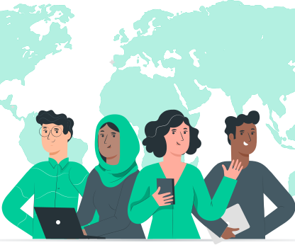
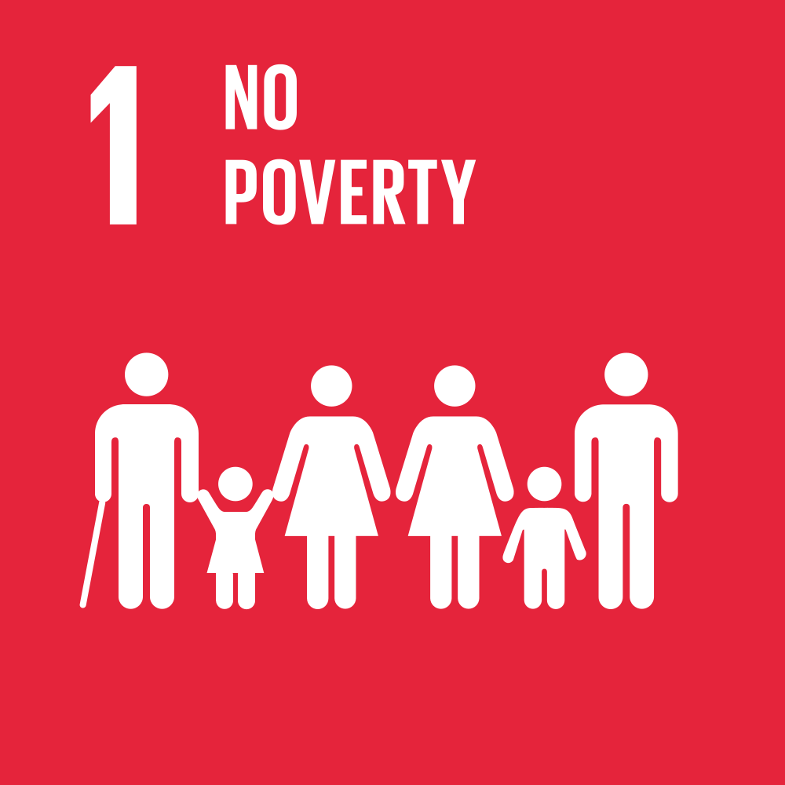
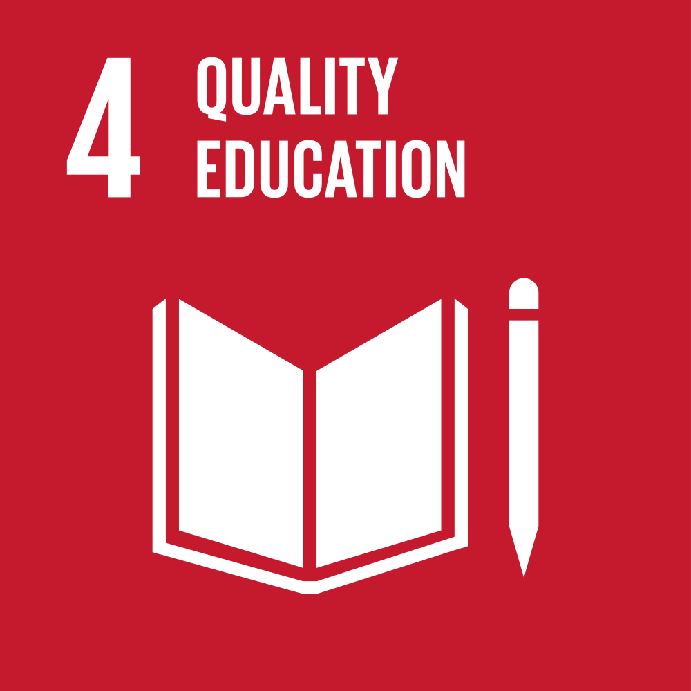
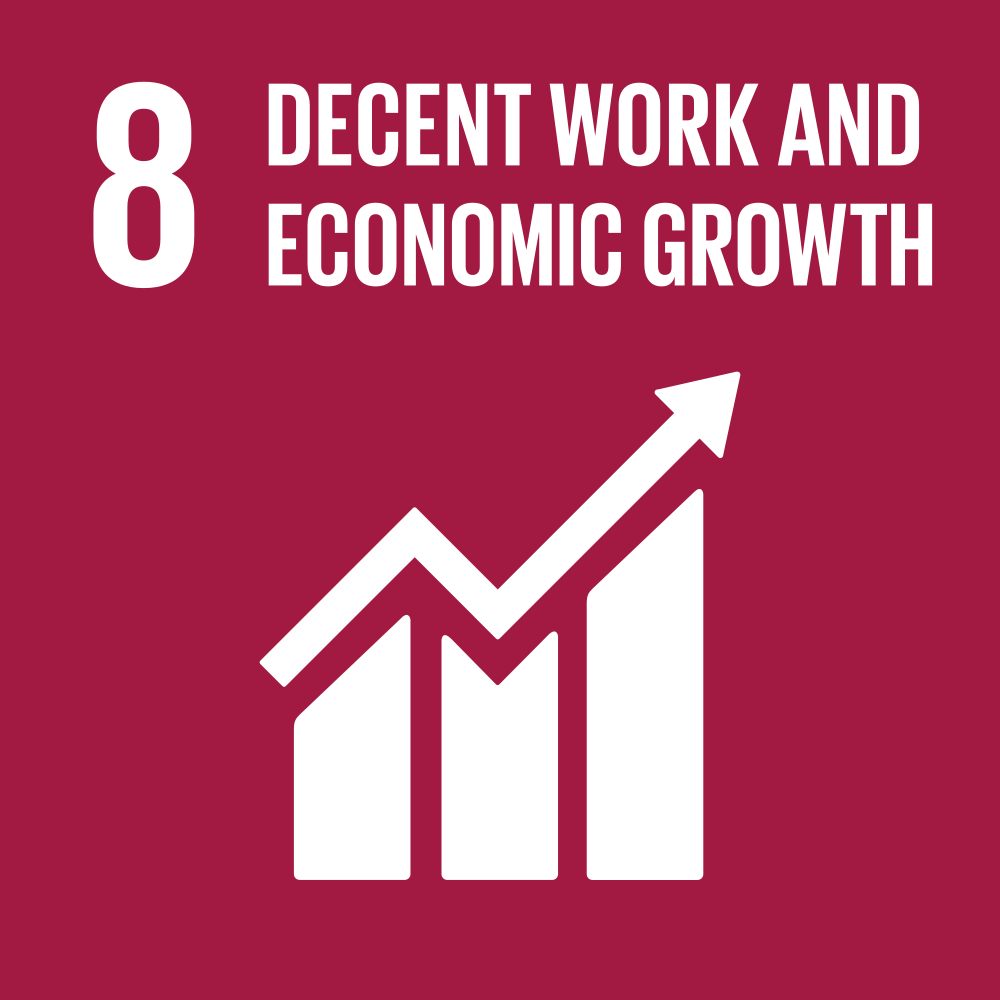
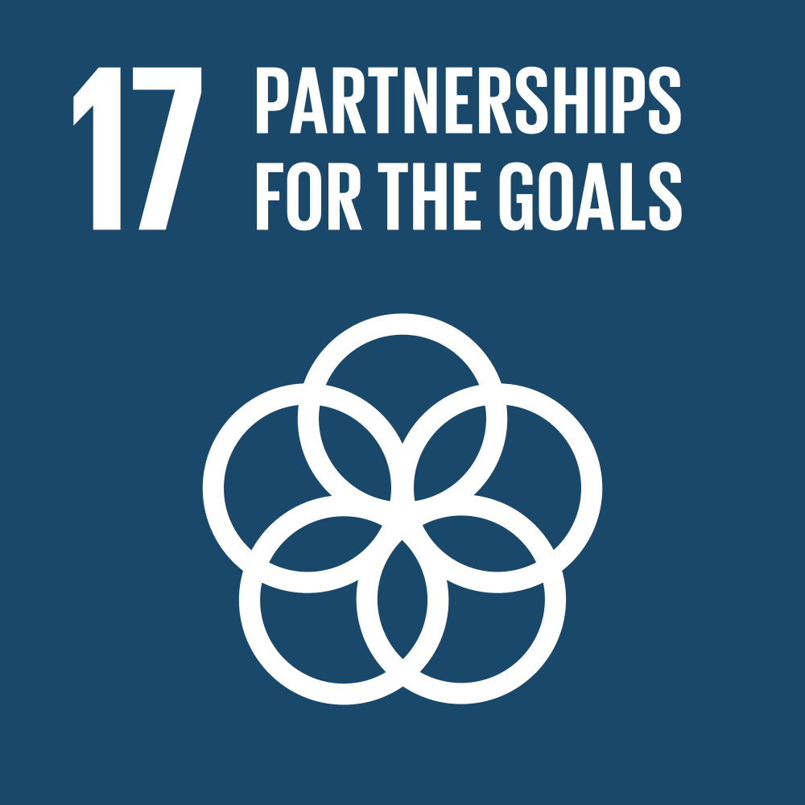

Transforming lives in Africa with education and innovation.
About the NGO
Aminat Olanbiwoninu Kadri - AOK Foundation was established in July, 2019 as an organisation committed to improving the quality of life for disadvantaged Africans, by partnering with visionary organizations to enable young people in Africa have access to quality education.
We want a continent where young people are thriving and their leadership and contributions matter. A future where young people are driving transformative change and achieving their full potential.
The Problem
In today's global landscape, there is a growing demand for skilled individuals, yet the process of discovering, nurturing, and empowering such talent presents significant challenges. Despite talent being present in every corner of the world, access to opportunities remains unequal. Factors such as poverty, race, gender, nationality, or even geographic location should not hinder the advancement of exceptionally talented individuals seeking opportunities.
Our Mission
Our mission is to empower individuals from diverse backgrounds, spanning from young learners to university graduates, by granting them access to top-tier education and cutting-edge technology. Through our NGO, we offer employment prospects within reputable organizations, along with collaborative learning initiatives and valuable resources. Additionally, for businesses, we streamline the process of sourcing, assessing, and recruiting top talent for various roles, irrespective of their geographical location..
We love what we do
We are committed to enhancing the quality of life for Africans by supporting initiatives that improve access to educational opportunities.

Our Team
Our team comprises dedicated Africans who reside and operate within the continent. With deep-rooted understanding and firsthand experience, we intimately comprehend the multifaceted challenges inherent in building and fostering growth here. Our collective belief is anchored in the conviction that these challenges are not insurmountable barriers, but rather opportunities awaiting the transformative touch of fearless leaders driven by a fervent desire to effect positive change. Through our unwavering commitment and passion, we strive to catalyze solutions that uplift communities and drive sustainable development across Africa.
Blog Posts
Sustainable Development Goals
The Sustainable Development Goals are a global call to action to end poverty, protect the earth’s environment and climate, and ensure that people everywhere can enjoy peace and prosperity. These are the goals AOK Foundation is working towards.




Contact Us
Email: info@aokfoundation.org
Tel: +234 802 757 3121, +234 803 425 6265
Address: Suite B3, Irama Plaza, 4th Avenue, Gwarinpa, Abuja, FCT